Lesespaziergang Nikolausabend: Stiefel, Sterne, Plätzchenduft – 8 Stationen in 3 Lesestufen mit Hörfassung (Klasse 1–2, DaZ)

Lesespaziergang Tiere im Winter: Pit, der Igel, sucht ein Bett – 8 Stationen in 3 Lesestufen mit Hörfassung (Klasse 1–2, DaZ)

Lesespaziergang Laternenzeit: Linas Laterne – 8 Stationen in 3 Lesestufen mit Hörfassung (Klasse 1–2, DaZ)
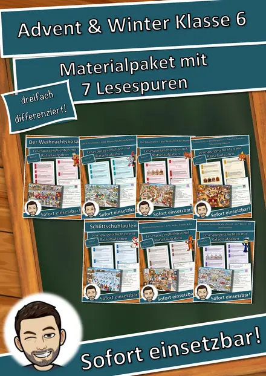
Materialpaket Advent und Winter für die 6. Klasse: 7 Lesespurgeschichten mit Rätselaufgaben (Weihnachtsbasar, Saturnalien, Lichterfeste & mehr)
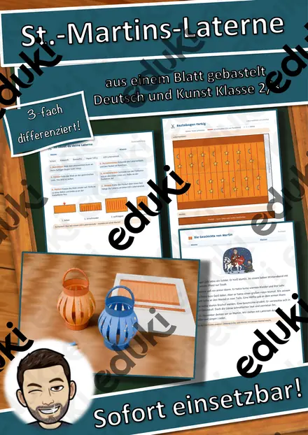
St.-Martins-Laterne aus einem Blatt – falten, einschneiden, rollen, mit Martinsgeschichte, 3-fach differenziert (Klasse 2/3)
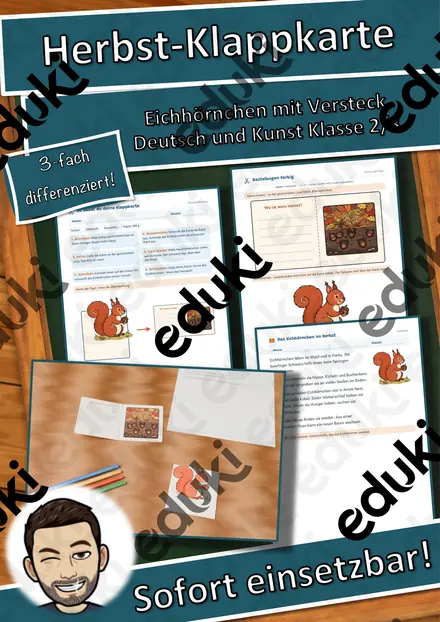
Herbst-Klappkarte Eichhörnchen – Figurenkarte basteln mit Sachtext, 3-fach differenziert (Tiere im Herbst, Klasse 2/3)
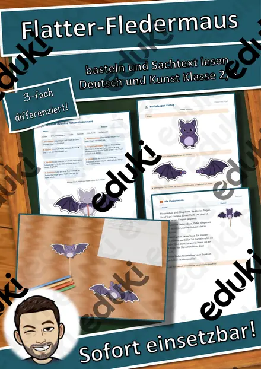
Flatter-Fledermaus am Stab – bewegliche Bastelfigur mit Sachtext, 3-fach differenziert (Halloween/Herbst, Klasse 2/3)
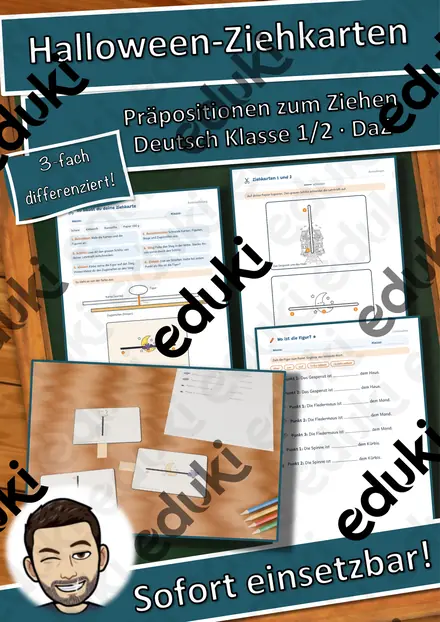
Halloween-Ziehkarten – Präpositionen sichtbar machen: über, vor, neben, auf, 3-fach differenziert (Klasse 1/2, DaZ)
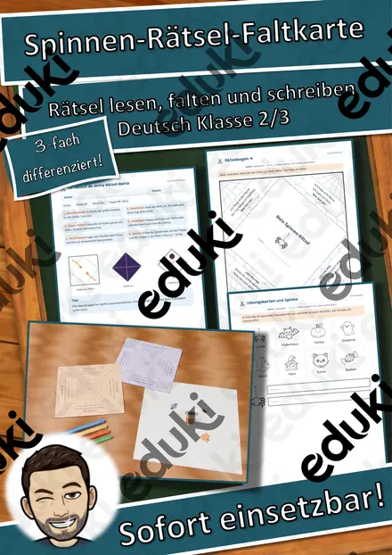
Spinnen-Rätsel-Faltkarte – Halloween-Rätsel lesen und schreiben, Pop-up-Spinne, 3-fach differenziert (Klasse 2/3)
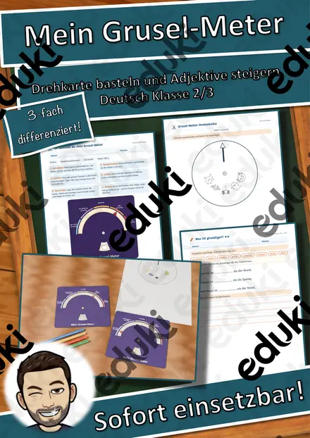
Mein Grusel-Meter – Halloween-Drehkarte basteln, Adjektive steigern und vergleichen, 3-fach differenziert (Klasse 2/3)
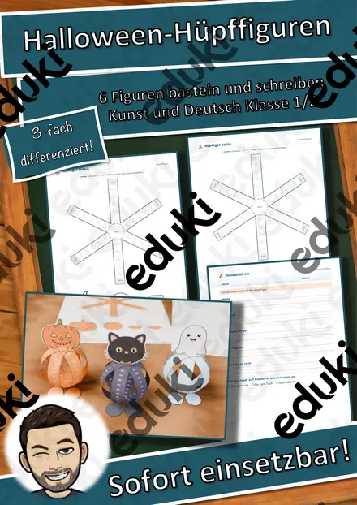
Halloween-Hüpffiguren – 6 Bastelvorlagen mit Federkugel, Steckbrief und Geschichte, 3-fach differenziert (Klasse 1/2)
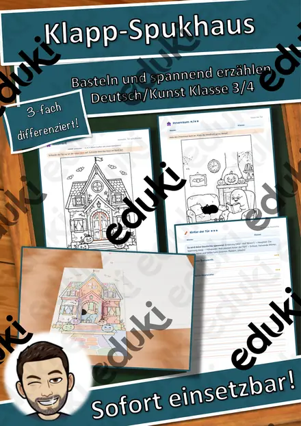
Klapp-Spukhaus zu Halloween – Bastelvorlage mit Schreibanlass und Wortspeicher, 3-fach differenziert (Klasse 3/4)
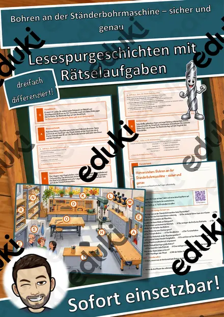
Bohren an der Ständerbohrmaschine – sicher und genau – Lesespurgeschichte mit Rätselaufgaben (Klasse 7)
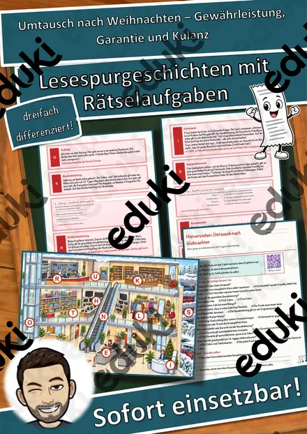
Umtausch nach Weihnachten – Gewährleistung, Garantie und Kulanz – Lesespurgeschichte mit Rätselaufgaben (Klasse 8)
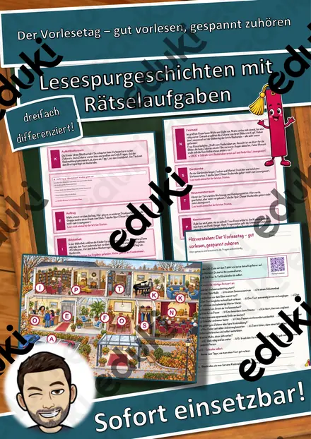
Der Vorlesetag – gut vorlesen, gespannt zuhören – Lesespurgeschichte mit Rätselaufgaben (Klasse 6)
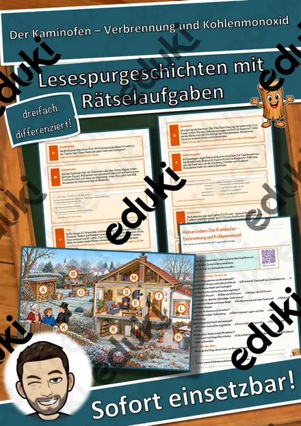
Der Kaminofen – Verbrennung und Kohlenmonoxid – Lesespurgeschichte mit Rätselaufgaben (Klasse 8)
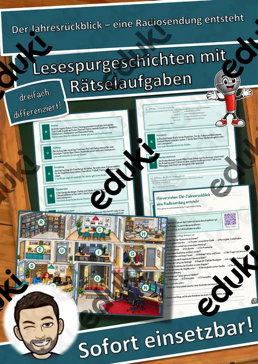
Der Jahresrückblick – eine Radiosendung entsteht – Lesespurgeschichte mit Rätselaufgaben (Klasse 7)
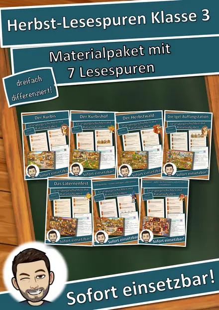
Materialpaket Herbst-Lesespuren für die 3. Klasse: 7 Lesespurgeschichten mit Rätselaufgaben (Kürbis, Igel, Laterne, Halloween & mehr)
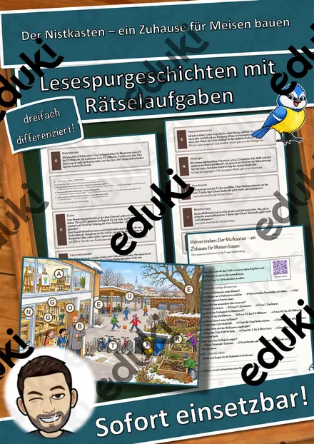
Der Nistkasten – ein Zuhause für Meisen bauen – Lesespurgeschichte mit Rätselaufgaben (Klasse 5)
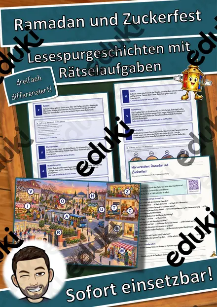
Ramadan und Zuckerfest – Lesespurgeschichte mit Rätselaufgaben (Klasse 4)
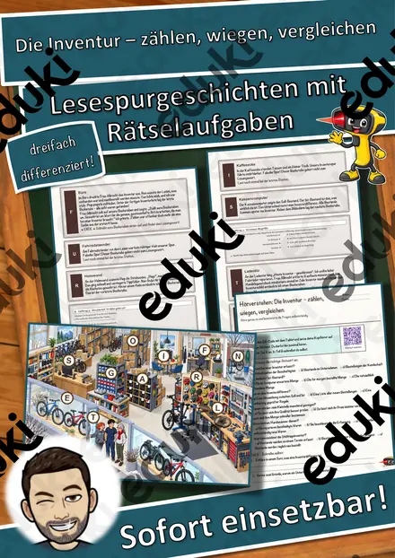
Die Inventur – zählen, wiegen, vergleichen – Lesespurgeschichte mit Rätselaufgaben (Klasse 8)
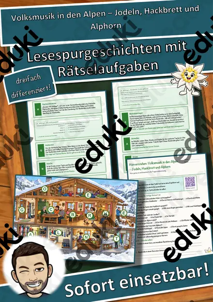
Volksmusik in den Alpen – Jodeln, Hackbrett und Alphorn – Lesespurgeschichte mit Rätselaufgaben (Klasse 7)
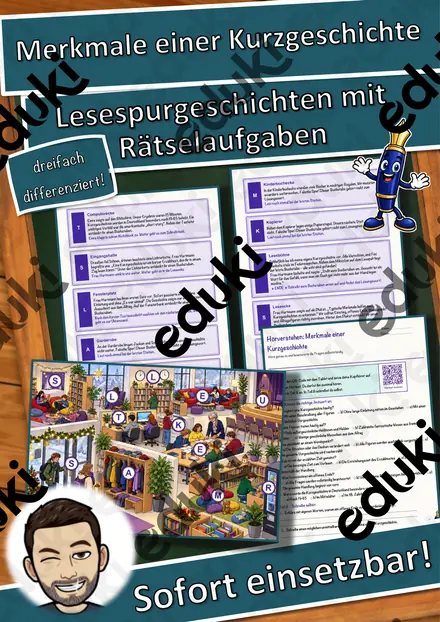
Merkmale einer Kurzgeschichte – Lesespurgeschichte mit Rätselaufgaben (Klasse 7)
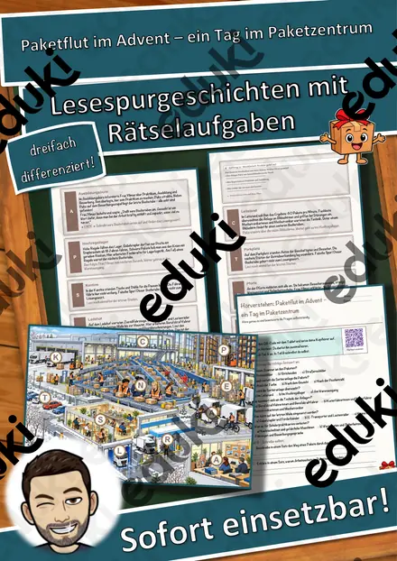
Paketflut im Advent – ein Tag im Paketzentrum – Lesespurgeschichte mit Rätselaufgaben (Klasse 8)
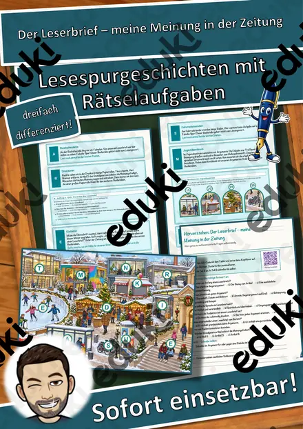
Der Leserbrief – meine Meinung in der Zeitung – Lesespurgeschichte mit Rätselaufgaben (Klasse 8)
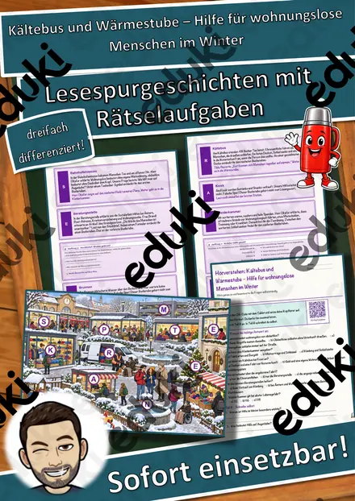
Kältebus und Wärmestube – Hilfe für wohnungslose Menschen im Winter – Lesespurgeschichte mit Rätselaufgaben (Klasse 9)
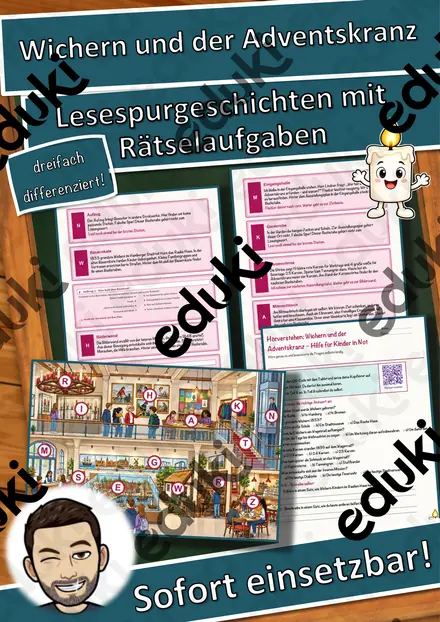
Wichern und der Adventskranz – Hilfe für Kinder in Not – Lesespurgeschichte mit Rätselaufgaben (Klasse 7)
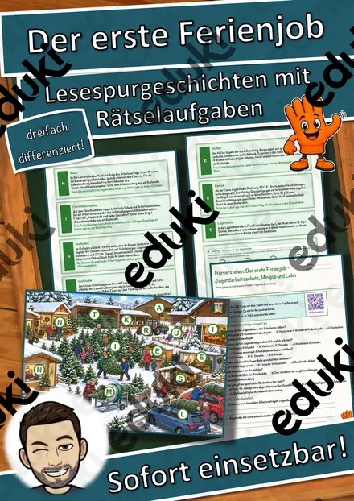
Der erste Ferienjob – Jugendarbeitsschutz, Minijob und Lohn – Lesespurgeschichte mit Rätselaufgaben (Klasse 9)
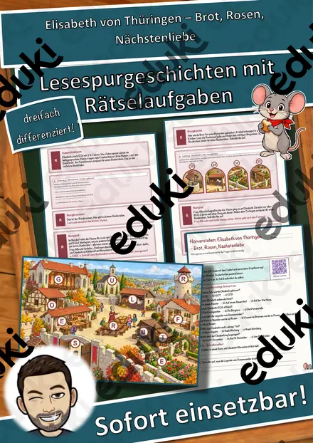
Elisabeth von Thüringen – Brot, Rosen, Nächstenliebe – Lesespurgeschichte mit Rätselaufgaben (Klasse 4)
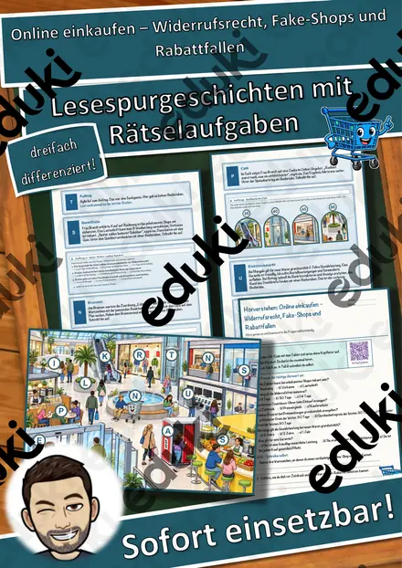
Online einkaufen – Widerrufsrecht, Fake-Shops und Rabattfallen – Lesespurgeschichte mit Rätselaufgaben (Klasse 8)
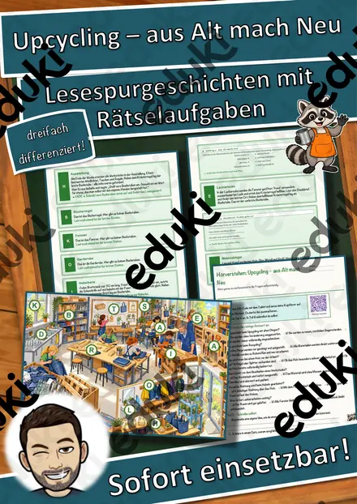
Upcycling – aus Alt mach Neu – Lesespurgeschichte mit Rätselaufgaben (Klasse 6)
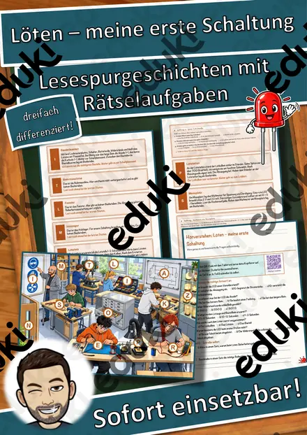
Löten – meine erste Schaltung – Lesespurgeschichte mit Rätselaufgaben (Klasse 8)
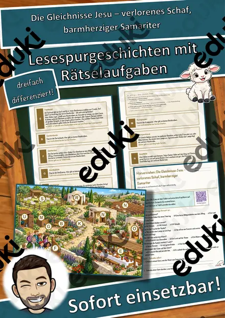
Die Gleichnisse Jesu – verlorenes Schaf, barmherziger Samariter – Lesespurgeschichte mit Rätselaufgaben (Klasse 3)
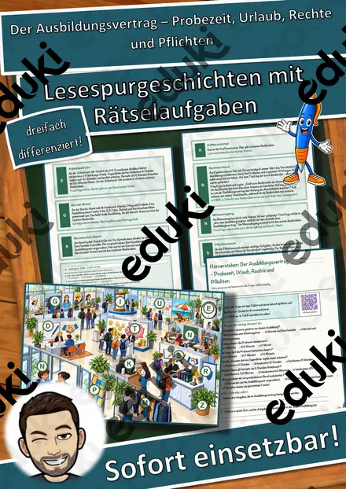
Der Ausbildungsvertrag – Probezeit, Urlaub, Rechte und Pflichten – Lesespurgeschichte mit Rätselaufgaben (Klasse 9)
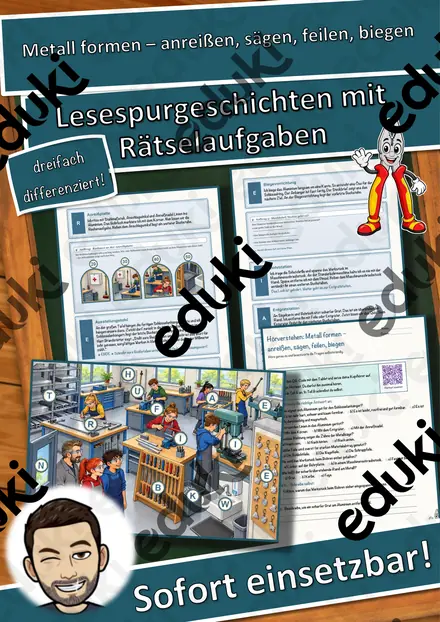
Metall formen – anreißen, sägen, feilen, biegen – Lesespurgeschichte mit Rätselaufgaben (Klasse 7)
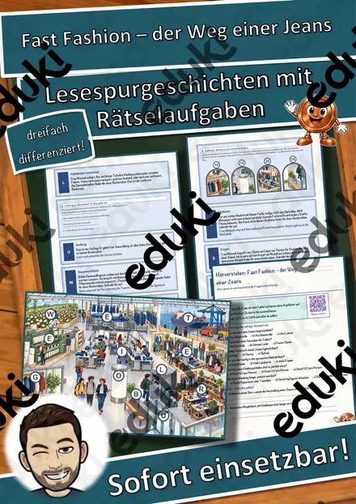
Fast Fashion – der Weg einer Jeans – Lesespurgeschichte mit Rätselaufgaben (Klasse 8)
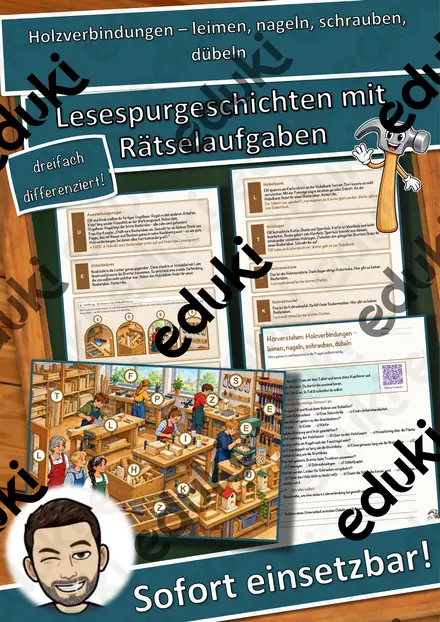
Holzverbindungen – leimen, nageln, schrauben, dübeln – Lesespurgeschichte mit Rätselaufgaben (Klasse 6)
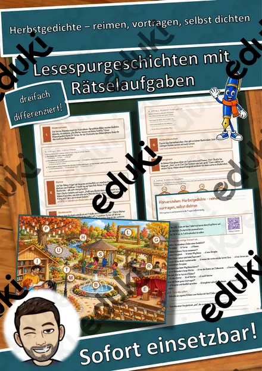
Herbstgedichte – reimen, vortragen, selbst dichten – Lesespurgeschichte mit Rätselaufgaben (Klasse 3)
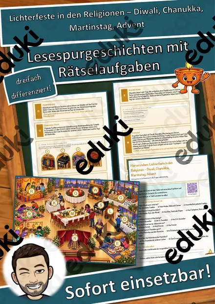
Lichterfeste in den Religionen – Diwali, Chanukka, Martinstag, Advent – Lesespurgeschichte mit Rätselaufgaben (Klasse 6)
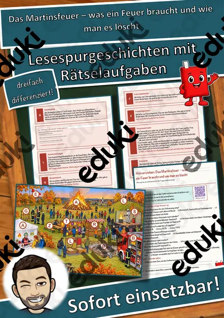
Das Martinsfeuer – was ein Feuer braucht und wie man es löscht – Lesespurgeschichte mit Rätselaufgaben (Klasse 8)
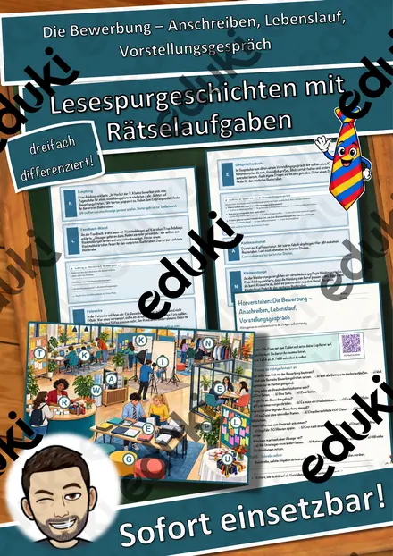
Die Bewerbung – Anschreiben, Lebenslauf, Vorstellungsgespräch – Lesespurgeschichte mit Rätselaufgaben (Klasse 9)
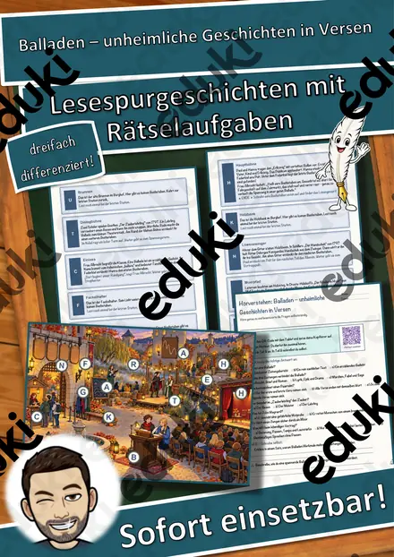
Balladen – unheimliche Geschichten in Versen – Lesespurgeschichte mit Rätselaufgaben (Klasse 7)
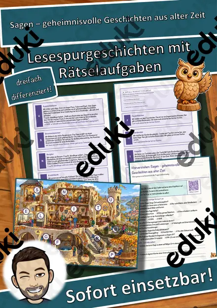
Sagen – geheimnisvolle Geschichten aus alter Zeit – Lesespurgeschichte mit Rätselaufgaben (Klasse 6)
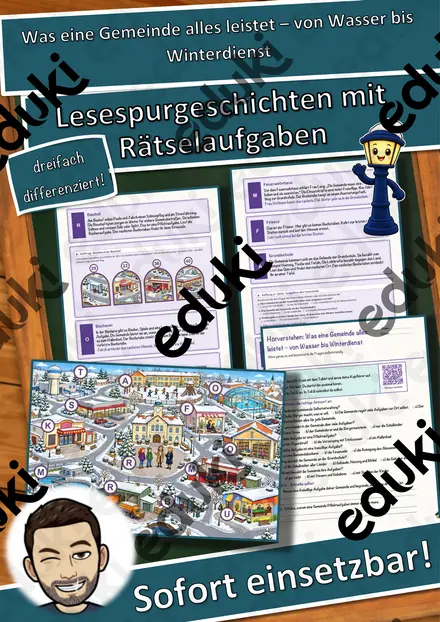
Was eine Gemeinde alles leistet – von Wasser bis Winterdienst – Lesespurgeschichte mit Rätselaufgaben (Klasse 6)
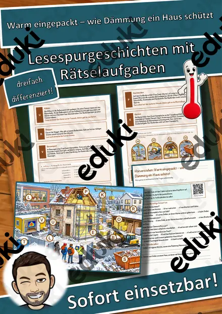
Warm eingepackt – wie Dämmung ein Haus schützt – Lesespurgeschichte mit Rätselaufgaben (Klasse 8)
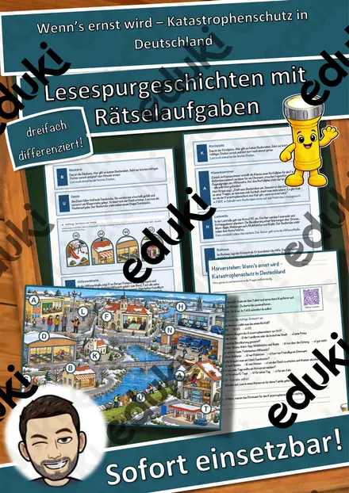
Wenn’s ernst wird – Katastrophenschutz in Deutschland – Lesespurgeschichte mit Rätselaufgaben (Klasse 7)
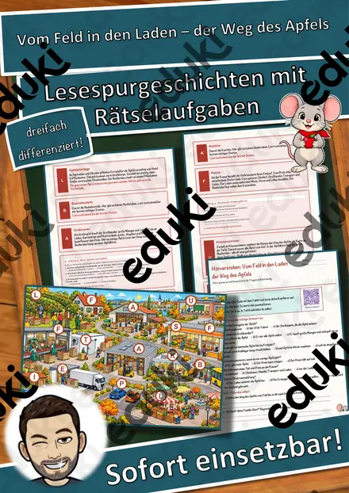
Vom Feld in den Laden – der Weg des Apfels – Lesespurgeschichte mit Rätselaufgaben (Klasse 5)
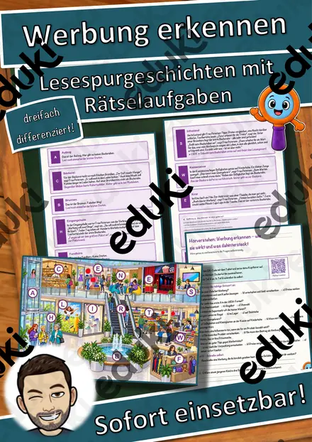
Werbung erkennen – wie sie wirkt und was dahintersteckt – Lesespurgeschichte mit Rätselaufgaben (Klasse 8)
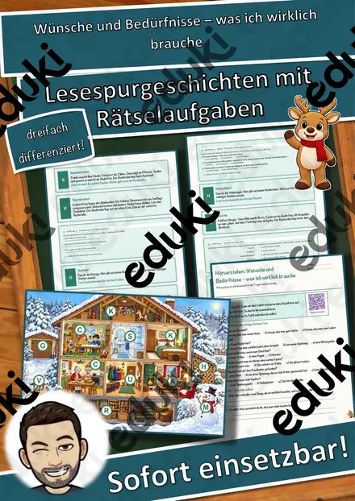
Wünsche und Bedürfnisse – was ich wirklich brauche – Lesespurgeschichte mit Rätselaufgaben (Klasse 1)
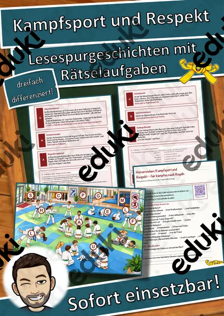
Kampfsport und Respekt – fair kämpfen nach Regeln – Lesespurgeschichte mit Rätselaufgaben (Klasse 8)
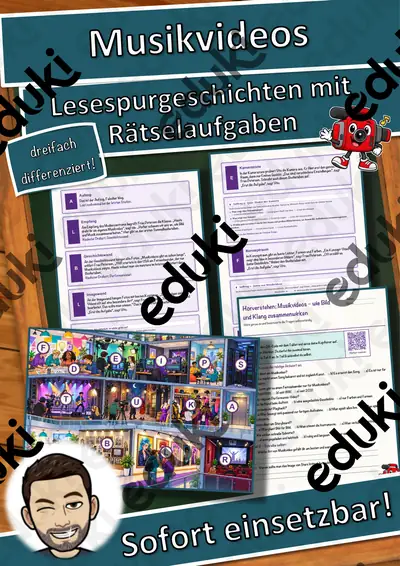
Musikvideos – wie Bild und Klang zusammenwirken – Lesespurgeschichte mit Rätselaufgaben (Klasse 9)
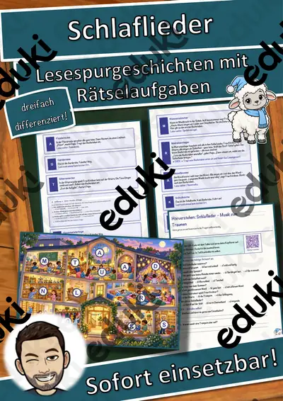
Schlaflieder – Musik zum Träumen – Lesespurgeschichte mit Rätselaufgaben (Klasse 1)
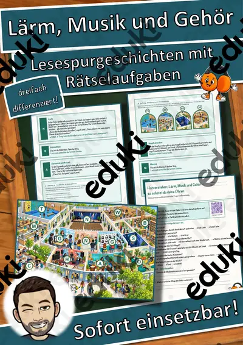
Lärm, Musik und Gehör – so schützt du deine Ohren – Lesespurgeschichte mit Rätselaufgaben (Klasse 6)
Der Kanon – eine Melodie, viele Stimmen – Lesespurgeschichte mit Rätselaufgaben (Klasse 3)
Karneval der Tiere – Musik aus dem Zoo – Lesespurgeschichte mit Rätselaufgaben (Klasse 1)
Kinderlieder und Spiellieder – Singen macht Spaß – Lesespurgeschichte mit Rätselaufgaben (Klasse 1)
Komponistinnen – Frauen in der Musikgeschichte – Lesespurgeschichte mit Rätselaufgaben (Klasse 9)
Musikinstrumente der Welt – eine Reise durchs Museum – Lesespurgeschichte mit Rätselaufgaben (Klasse 3)
Samba, Reggae & Co. – Musik aus Lateinamerika und der Karibik – Lesespurgeschichte mit Rätselaufgaben (Klasse 8)
Streaming und Urheberrecht – Geld, Rechte und Musik – Lesespurgeschichte mit Rätselaufgaben (Klasse 10)
Winterklänge – Musik im Schnee – Lesespurgeschichte mit Rätselaufgaben (Klasse 1)
Weihnachtslieder – Musik im Advent – Lesespurgeschichte mit Rätselaufgaben (Klasse 3)
Volkstanz und Tanzfest – Tänze im Takt – Lesespurgeschichte mit Rätselaufgaben (Klasse 3)
Die Stimme und der Chor – wie wir singen – Lesespurgeschichte mit Rätselaufgaben (Klasse 6)
Musik und Werbung – Jingle, Slogan, Klanglogo – Lesespurgeschichte mit Rätselaufgaben (Klasse 10)
Das Musical – Singen, Spielen, Tanzen – Lesespurgeschichte mit Rätselaufgaben (Klasse 8)
Bodypercussion – Musik mit dem Körper – Lesespurgeschichte mit Rätselaufgaben (Klasse 1)
Die Oper – Musik, die Geschichten erzählt – Lesespurgeschichte mit Rätselaufgaben (Klasse 7)
Takt und Rhythmus – Lesespurgeschichte mit Rätselaufgaben (Klasse 3)
Digitale Kunst – vom Pixel zur Projektion – Lesespurgeschichte mit Rätselaufgaben (Klasse 10)
Mensch und Natur in den Religionen – Lesespurgeschichte mit Rätselaufgaben (Klasse 7)
Glauben in Freiheit – Religionsfreiheit und Toleranz – Lesespurgeschichte mit Rätselaufgaben (Klasse 9)
Essen verbindet – Speiseregeln und Fasten in den Religionen – Lesespurgeschichte mit Rätselaufgaben (Klasse 5)
Pilgern – Reise zu heiligen Orten der Weltreligionen – Lesespurgeschichte mit Rätselaufgaben (Klasse 7)
Medien-Detektive unterwegs – Lesespurgeschichte mit Rätselaufgaben (Klasse 3)
Wir helfen einander – Lesespurgeschichte mit Rätselaufgaben (Klasse 1)
Die Goldene Regel in den Religionen und Kulturen – Lesespurgeschichte mit Rätselaufgaben (Klasse 10)
Fair teilen und abgeben – Lesespurgeschichte mit Rätselaufgaben (Klasse 1)
Heilige Schriften der Weltreligionen – Lesespurgeschichte mit Rätselaufgaben (Klasse 7)
Symbole der Weltreligionen – Lesespurgeschichte mit Rätselaufgaben (Klasse 6)
Gotteshäuser der Weltreligionen – Lesespurgeschichte mit Rätselaufgaben (Klasse 4)
Fernöstliche Religionen – Lesespurgeschichte mit Rätselaufgaben (Klasse 9)
Zusammen in der Klasse – Lesespurgeschichte mit Rätselaufgaben (Klasse 1)
Verantwortung in der digitalen Welt – Lesespurgeschichte mit Rätselaufgaben (Klasse 8)
Feste der Weltreligionen – Lesespurgeschichte mit Rätselaufgaben (Klasse 5)
Jeder ist einzigartig – Lesespurgeschichte mit Rätselaufgaben (Klasse 6)
Das Haus der Grundrechte – Lesespurgeschichte mit Rätselaufgaben (Klasse 9)
Der Landtag – Lesespurgeschichte mit Rätselaufgaben (Klasse 9)
Das Nachrichtenstudio – Lesespurgeschichte mit Rätselaufgaben (Klasse 9)
Das Gericht – Lesespurgeschichte mit Rätselaufgaben (Klasse 9)
Die Bundestagswahl – Lesespurgeschichte mit Rätselaufgaben (Klasse 9)
Das Rathaus – Lesespurgeschichte mit Rätselaufgaben (Klasse 8)
Das Feuerzeug – Lesespurgeschichte mit Rätselaufgaben (Klasse 8)
Die Windkraftanlage – Lesespurgeschichte mit Rätselaufgaben (Klasse 8)
Das Gezeitenkraftwerk – Lesespurgeschichte mit Rätselaufgaben (Klasse 9)
Das Kohlekraftwerk – Lesespurgeschichte mit Rätselaufgaben (Klasse 9)
Der Staudamm – Lesespurgeschichte mit Rätselaufgaben (Klasse 9)
Das Windrad – Lesespurgeschichte mit Rätselaufgaben (Klasse 9)
Die Ölmühle – Lesespurgeschichte mit Rätselaufgaben (Klasse 8)
Die Kaffeerösterei – Lesespurgeschichte mit Rätselaufgaben (Klasse 8)
Die Schokoladenfabrik – Lesespurgeschichte mit Rätselaufgaben (Klasse 8)
Die Aluminiumhütte – Lesespurgeschichte mit Rätselaufgaben (Klasse 9)
Die Photovoltaikanlage – Lesespurgeschichte mit Rätselaufgaben (Klasse 9)
Das Kernkraftwerk – Lesespurgeschichte mit Rätselaufgaben (Klasse 9)
Das Wasserkraftwerk – Lesespurgeschichte mit Rätselaufgaben (Klasse 8)
Die Schneiderei – Ein Praktikum beim Schneider – Lesespurgeschichte mit Rätselaufgaben (Klasse 9)
Der Supermarkt – Ein Praktikum im Einzelhandel – Lesespurgeschichte mit Rätselaufgaben (Klasse 10)
Die Gärtnerei – Ein Praktikum beim Gärtner – Lesespurgeschichte mit Rätselaufgaben (Klasse 9)
Die Elektrowerkstatt – Ein Praktikum beim Elektroniker – Lesespurgeschichte mit Rätselaufgaben (Klasse 10)
Der Malerbetrieb – Ein Praktikum beim Maler – Lesespurgeschichte mit Rätselaufgaben (Klasse 9)
Die Schreinerei – Ein Praktikum beim Tischler – Lesespurgeschichte mit Rätselaufgaben (Klasse 9)
Die Kfz-Werkstatt – Ein Praktikum beim Kfz-Mechatroniker – Lesespurgeschichte mit Rätselaufgaben (Klasse 9)
Der 3D-Druck – In der Technik-Werkstatt – Lesespurgeschichte mit Rätselaufgaben (Klasse 9)
Die Bibliothek – Lesespurgeschichte mit Rätselaufgaben (Klasse 7)
Der Bundestag – Lesespurgeschichte mit Rätselaufgaben (Klasse 8)
Der Werkraum – Lesespurgeschichte mit Rätselaufgaben (Klasse 7)
Die Zeitungsredaktion – Lesespurgeschichte mit Rätselaufgaben (Klasse 8)
Die Windkraft – Lesespurgeschichte mit Rätselaufgaben (Klasse 8)
Die Wahl in der Klasse – Lesespurgeschichte mit Rätselaufgaben (Klasse 5)
Der Jugendrat entscheidet – Lesespurgeschichte mit Rätselaufgaben (Klasse 6)
Die Charakterisierung – Prüfungstraining Deutsch (Klasse 8)
Die Ballade – Prüfungstraining Deutsch (Klasse 8)
Die Kurzgeschichte – Prüfungstraining Deutsch (Klasse 9)
Die Fabel – Prüfungstraining Deutsch (Klasse 8)
Groß- und Kleinschreibung – Prüfungstraining Deutsch (Klasse 8)
Die Zeitformen – Prüfungstraining Deutsch (Klasse 8)
Die Satzglieder – Prüfungstraining Deutsch (Klasse 8)
Die Wortarten – Prüfungstraining Deutsch (Klasse 8)
Aktiv und Passiv – Prüfungstraining Deutsch (Klasse 8)
Die Kommasetzung – Prüfungstraining Deutsch (Klasse 8)
Die Vorgangsbeschreibung – Prüfungstraining Deutsch (Klasse 8)
Der Bericht – Prüfungstraining Deutsch (Klasse 8)
Die Sachtextanalyse – Prüfungstraining Deutsch (Klasse 9)
Die Gedichtanalyse – Prüfungstraining Deutsch (Klasse 9)
Die Erörterung – Prüfungstraining Deutsch (Klasse 9)
Die Inhaltsangabe – Prüfungstraining Deutsch (Klasse 8)

Wichtel beschreiben: Schreibanlass mit 4 Wichtelbildern, Wortspeicher und Checkliste (Klasse 3–4)
DaZ-Wortschatz Materialpaket: 6 Wortfelder differenziert A1/A2/B1 – Hörszenen (QR), Lückentexte, Rollenspiele, Sprechkarten

DaZ-Wortschatz Körper und Gesundheit – differenziert A1/A2/B1: Hörszene (QR), Lückentexte, Rollenspiel
DaZ-Wortschatz Unterwegs in der Stadt – differenziert A1/A2/B1: Hörszene (QR), Lückentexte, Rollenspiel

DaZ-Wortschatz Mein Zuhause – differenziert A1/A2/B1: Hörszene (QR), Lückentexte, Rollenspiel
DaZ-Wortschatz Kleidung und Wetter – differenziert A1/A2/B1: Hörszene (QR), Lückentexte, Rollenspiel

DaZ-Wortschatz Essen und Trinken – differenziert A1/A2/B1: Hörszene (QR), Lückentexte, Rollenspiel
DaZ-Wortschatz In der Schule – differenziert A1/A2/B1: Hörszene (QR), Lückentexte, Rollenspiel
Öhringen Lückentext mit Wortspeicher Hörverstehen und Suchsel
Brilon Lückentext mit Wortspeicher Hörverstehen und Suchsel
Herrenberg Lückentext mit Wortspeicher Hörverstehen und Suchsel
Eschweiler Lückentext mit Wortspeicher Hörverstehen und Suchsel
Kerpen Lückentext mit Wortspeicher Hörverstehen und Suchsel
Celle Lückentext mit Wortspeicher Hörverstehen und Suchsel
Lüdenscheid Lückentext mit Wortspeicher Hörverstehen und Suchsel
Lüneburg Lückentext mit Wortspeicher Hörverstehen und Suchsel
Marburg Lückentext mit Wortspeicher Hörverstehen und Suchsel
Lünen Lückentext mit Wortspeicher Hörverstehen und Suchsel
Pieter Bruegel Lückentext mit Wortspeicher Hörverstehen und Suchsel
Yves Klein Lückentext mit Wortspeicher Hörverstehen und Suchsel
Wassily Kandinsky Lückentext mit Wortspeicher Hörverstehen und Suchsel
Roy Lichtenstein Lückentext mit Wortspeicher Hörverstehen und Suchsel
René Magritte Lückentext mit Wortspeicher Hörverstehen und Suchsel
Piet Mondrian Lückentext mit Wortspeicher Hörverstehen und Suchsel
Paul Klee Lückentext mit Wortspeicher Hörverstehen und Suchsel
Joseph Beuys Lückentext mit Wortspeicher Hörverstehen und Suchsel
Henri Rousseau Lückentext mit Wortspeicher Hörverstehen und Suchsel
Günther Uecker Lückentext mit Wortspeicher Hörverstehen und Suchsel
Giuseppe Arcimboldo Lückentext mit Wortspeicher Hörverstehen und Suchsel
Georges Seurat Lückentext mit Wortspeicher Hörverstehen und Suchsel
Georg Baselitz Lückentext mit Wortspeicher Hörverstehen und Suchsel
Franz Marc Lückentext mit Wortspeicher Hörverstehen und Suchsel

Aare Lückentext mit Wortspeicher Hörverstehen und Suchsel

Sachkunde Lückentext mit Wortspeicher Hörverstehen und Suchsel

Rochen Lückentext mit Wortspeicher Hörverstehen und Suchsel

Robinson Crusoe Lückentext mit Wortspeicher Hörverstehen und Suchsel

Roboter Lückentext mit Wortspeicher Hörverstehen und Suchsel

Papier Lückentext mit Wortspeicher Hörverstehen und Suchsel

Die Schatzinsel Lückentext mit Wortspeicher Hörverstehen und Suchsel

Saarbrücken Lückentext mit Wortspeicher Hörverstehen und Suchsel

Saale Lückentext mit Wortspeicher Hörverstehen und Suchsel

Rad Lückentext mit Wortspeicher Hörverstehen und Suchsel

Otfried Preußler Lückentext mit Wortspeicher Hörverstehen und Suchsel

Bill Gates Lückentext mit Wortspeicher Hörverstehen und Suchsel

Bengalische Sprache Lückentext mit Wortspeicher Hörverstehen und Suchsel

Mythos Lückentext mit Wortspeicher Hörverstehen und Suchsel

Michael Ende Lückentext mit Wortspeicher Hörverstehen und Suchsel

Esch an der Alzette Lückentext mit Wortspeicher Hörverstehen und Suchsel

Mesopotamien Lückentext mit Wortspeicher Hörverstehen und Suchsel

Ludwig der Vierzehnte Lückentext mit Wortspeicher Hörverstehen und Suchsel

Karl der Fünfte Lückentext mit Wortspeicher Hörverstehen und Suchsel

Gesang Lückentext mit Wortspeicher Hörverstehen und Suchsel

Dreißigjähriger Krieg Lückentext mit Wortspeicher Hörverstehen und Suchsel

Chisinau Lückentext mit Wortspeicher Hörverstehen und Suchsel

Buchdruck Lückentext mit Wortspeicher Hörverstehen und Suchsel

Beerdigung Lückentext mit Wortspeicher Hörverstehen und Suchsel

Basketball Lückentext mit Wortspeicher Hörverstehen und Suchsel

Fußballverein Lückentext mit Wortspeicher Hörverstehen und Suchsel

Frédéric Chopin Lückentext mit Wortspeicher Hörverstehen und Suchsel

Frank-Walter Steinmeier Lückentext mit Wortspeicher Hörverstehen und Suchsel

Drachenfels Lückentext mit Wortspeicher Hörverstehen und Suchsel

Dorf Lückentext mit Wortspeicher Hörverstehen und Suchsel

Niger Lückentext mit Wortspeicher Hörverstehen und Suchsel

Nicaragua Lückentext mit Wortspeicher Hörverstehen und Suchsel

Nibelungensage Lückentext mit Wortspeicher Hörverstehen und Suchsel

New Orleans Lückentext mit Wortspeicher Hörverstehen und Suchsel

Nationalismus Lückentext mit Wortspeicher Hörverstehen und Suchsel

Nationalhymne Lückentext mit Wortspeicher Hörverstehen und Suchsel

Nation Lückentext mit Wortspeicher Hörverstehen und Suchsel

Naher Osten Lückentext mit Wortspeicher Hörverstehen und Suchsel

Nagel (Werkzeug) Lückentext mit Wortspeicher Hörverstehen und Suchsel

Maschine Lückentext mit Wortspeicher Hörverstehen und Suchsel

Manila Lückentext mit Wortspeicher Hörverstehen und Suchsel

Juventus Turin Lückentext mit Wortspeicher Hörverstehen und Suchsel

Justin Bieber Lückentext mit Wortspeicher Hörverstehen und Suchsel

Juri Gagarin Lückentext mit Wortspeicher Hörverstehen und Suchsel

Italienische Sprache Lückentext mit Wortspeicher Hörverstehen und Suchsel

Italien Lückentext mit Wortspeicher Hörverstehen und Suchsel

Istanbul Lückentext mit Wortspeicher Hörverstehen und Suchsel

Israel Lückentext mit Wortspeicher Hörverstehen und Suchsel

Impressionismus Lückentext mit Wortspeicher Hörverstehen und Suchsel

Import und Export Lückentext mit Wortspeicher Hörverstehen und Suchsel

Imperialismus Lückentext mit Wortspeicher Hörverstehen und Suchsel

Immanuel Kant Lückentext mit Wortspeicher Hörverstehen und Suchsel

Imam Lückentext mit Wortspeicher Hörverstehen und Suchsel

Hünengrab Lückentext mit Wortspeicher Hörverstehen und Suchsel

Hörspiel Lückentext mit Wortspeicher Hörverstehen und Suchsel

Hölle Lückentext mit Wortspeicher Hörverstehen und Suchsel

Höhlenmalerei Lückentext mit Wortspeicher Hörverstehen und Suchsel

Hunger Lückentext mit Wortspeicher Hörverstehen und Suchsel

Humor Lückentext mit Wortspeicher Hörverstehen und Suchsel

Humanismus Lückentext mit Wortspeicher Hörverstehen und Suchsel

Huldrych Zwingli Lückentext mit Wortspeicher Hörverstehen und Suchsel

Hugenotten Lückentext mit Wortspeicher Hörverstehen und Suchsel

Hubschrauber Lückentext mit Wortspeicher Hörverstehen und Suchsel

Hotel Lückentext mit Wortspeicher Hörverstehen und Suchsel

Horror Lückentext mit Wortspeicher Hörverstehen und Suchsel

Horn von Afrika Lückentext mit Wortspeicher Hörverstehen und Suchsel

Horizont Lückentext mit Wortspeicher Hörverstehen und Suchsel

Hooligan Lückentext mit Wortspeicher Hörverstehen und Suchsel

Hongkong Lückentext mit Wortspeicher Hörverstehen und Suchsel

Honduras Lückentext mit Wortspeicher Hörverstehen und Suchsel

Homosexualität Lückentext mit Wortspeicher Hörverstehen und Suchsel

Homer Lückentext mit Wortspeicher Hörverstehen und Suchsel
Keine Materialien gefunden – versuch einen anderen Suchbegriff oder Filter.